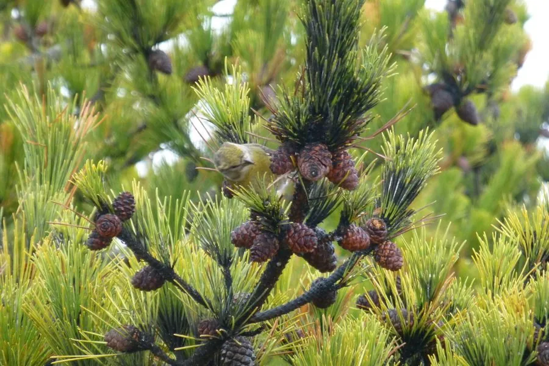

乔木 · 植物界
黑松 Pinus thunbergii

原产日本与朝鲜半岛的松树，树皮黑褐、针叶粗硬，抗风耐盐，是中国沿海防护林与盆景的常用树种。
- 分类
- 门裸子植物门纲松柏纲目松柏目科松科属松属
- 栖息环境
- 海拔 800 米以下的沿海丘陵、沙地与山地，抗风耐盐耐旱
- 地理分布
- 日本、朝鲜半岛及中国辽东半岛、山东半岛沿海，中国东部沿海广泛栽培
- 保护级别
- 暂无评估；中国未列入国家重点保护野生植物名录
物种志
黑松为常绿针叶乔木，高可达 30 m，树皮灰黑色、呈龟甲状开裂，故得名；树冠圆锥形或伞形，大枝平展。针叶 2 针一束，长 6–12 cm，粗硬，深绿色；雌雄同株，球果卵圆形，长 4–7 cm，成熟时褐色，鳞盾隆起，可宿存数年。
黑松原产日本、朝鲜半岛及中国辽东半岛、山东半岛沿海，中国东部沿海广泛栽培，喜光、耐寒、耐旱、抗风耐盐，适宜海岸沙地与酸性土壤。木材可供建筑与器具用；树皮可提取栲胶；树姿苍劲、耐修剪，是制作盆景的优良树种，也是沿海防护林的常用树种。黑松与油松外形相似，但黑松树皮颜色更深、针叶更粗硬，可据此区分。
形态与习性
- 株高可达 30 m，树皮灰黑色龟裂
- 花期4–5 月，雄球花聚生
- 球果成熟翌年 10 月，可宿存数年
- 光照强阳性，不耐庇荫
- 水分耐旱，抗风耐盐
- 主要用途沿海防护林、盆景、建筑用材
趣味知识
- 黑松树皮灰黑色、龟甲状开裂，颜色比油松更深，因此得名。
- 黑松抗风耐盐，是沿海防护林的重要树种。
- 黑松耐修剪、树姿苍劲，是制作松树盆景的常用材料。